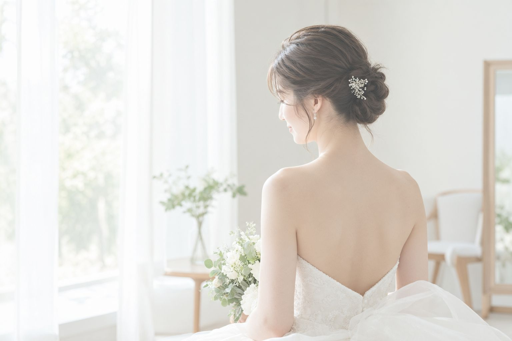
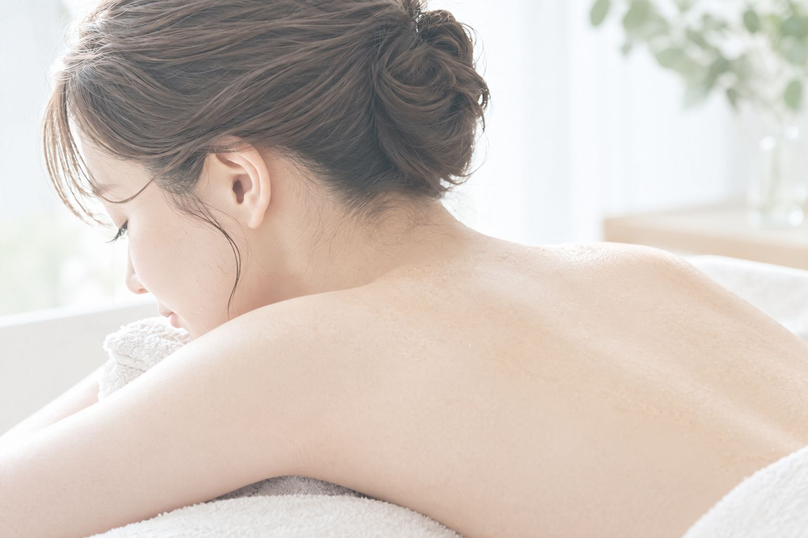

ブライダルケア
｜背中・うなじ・デコルテ
背中・うなじも
マツヤニパック（バイオウォーミーパック）は、顔だけのケアではありません。背中・うなじ・デコルテなど、全身にお使いいただけるパックです。
結婚式を控えたお客様からは、「ドレスから見える背中やうなじを、つるんとした状態で迎えたい」というご相談を多くいただいています。
顔のマツヤニパック・美肌脱毛・ビオスチームを組み合わせて、当日に向けて肌を整えていくのが、ハダノコトサロンのブライダルケアです。

背中・うなじのご相談については、noteの記事「「マツヤニパック、ちょっと怖い」そんなあなたへ」でも触れています。
はじめての方へ
ブライダルケアは、お一人おひとりのご希望や式までの日程に合わせて内容をご提案する、オーダーメイドのケアです。
挙式の3か月前ごろからのご相談をおすすめしています。すでにパッチテストを済ませている方は、顔・体のマツヤニパック、ビオスチーム、美肌脱毛を同時に組み合わせて受けていただくのがおすすめです。マツヤニパックが初めての方は事前のパッチテストが必要なため、まずはカウンセリングとパッチテストから始め、2回目以降で組み合わせてご案内します。美肌脱毛を組み合わせる場合は、毛周期に合わせて複数回のご来店が必要になる点もふまえてご相談ください。
仕上げの1回は、挙式の3〜5日前を目安にご案内しています。お肌が一番きれいに整ったタイミングで本番を迎えていただくためです。

よくあるご質問
気になるご質問をタップすると、お答えが開きます。
顔以外にどんな部位に対応できますか？
背中・うなじ・デコルテなど。結婚式前はこの3か所のご相談が多いです。
いつ頃から相談すればいいですか？
挙式の3か月前ごろが目安です。
料金はどのくらいかかりますか？
範囲や組み合わせによって変わるため、カウンセリングでのお見積りです。美肌脱毛は部位ごとの料金がございます。
何回くらい通えばいいですか？
部位や状態次第でカウンセリングにてご提案します。仕上げは挙式3〜5日前が目安です。
顔・体のマツヤニパックや脱毛、ビオスチームは同時に受けられますか？
すでにパッチテストを済ませている方は同時の組み合わせがおすすめです。マツヤニパックが初めての方は先にパッチテストが必要なため、2回目以降からの組み合わせになります。
施術後に赤みは出ますか？
一時的に出ることがありますが、数時間〜半日で落ち着く方がほとんどです。
直前の相談でも大丈夫ですか？
ご相談自体はいつでも可能です。組み合わせる内容次第では、余裕を持ったご相談が安心です。
結婚式以外の予定でも相談できますか？
はい。パーティーなど大切なご予定を控えている方からのご相談も承っています。ご希望の日程に合わせてご提案しますので、お気軽にお問い合わせください。
晴れの日に
一生に一度の特別な日。うしろ姿まで、自分の肌に自信を持って迎えていただきたい——それが、ハダノコトサロンのブライダルケアに込めた思いです。
まずはお気軽に、ご希望の日程と気になる部位をお聞かせください。